How I guided new players through identity checks and a first deposit without losing the game they chose
I designed the onboarding and first-deposit flow for a UK iGaming product under NDA. The goal was to get a new player through verification and funding without losing sight of why they came in the first place: to play a specific game.
- Role
- Sole designer, from brief to handoff
- Team
- 6 people: me (designer), PM, analyst, 2 iOS developers, QA
- Product
- iGaming, mobile app, UK market, NDA
- Result
- An end-to-end flow with 6 steps and 11 edge cases — from sign-up to launching the chosen game; handed off to development. Metrics are under NDA
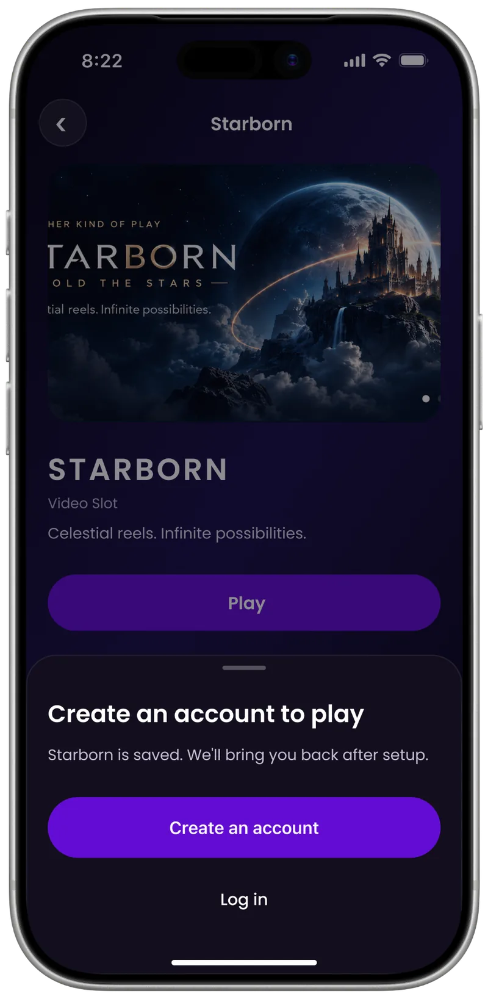
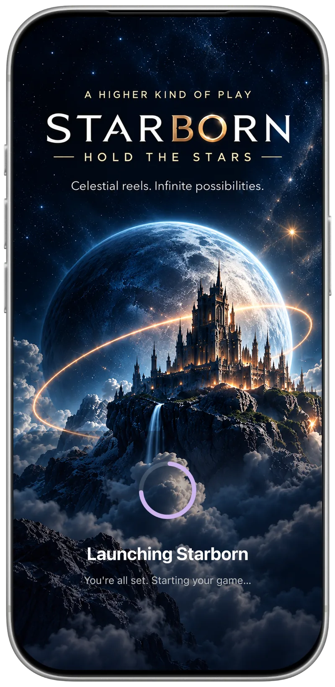
The chosen game stays in sight from the first tap on Play to the moment the player comes back ready to start.
Context
In the UK, a player can’t just sign up and play: the law requires identity verification, deposit limits and player-protection rules. Every one of those steps is a point where a new user might drop off.
The challenge was to handle all of that setup without turning the experience into a detached compliance funnel. The player still needed to feel that they were on the way to the game they had chosen.
What guided the flow
- Keep the player’s goal visible. The chosen game stays part of the journey instead of disappearing behind registration.
- Don’t make people repeat work. If someone leaves, they can come back and continue from the right place.
- Say clearly what’s happening. A quick check, a manual review, a recoverable error and a hard stop should never look like the same state.
- Don’t force funding. Players can add money later instead of being pushed through a deposit just to finish setup.
The core journey
I started with the shortest successful path, then designed the recovery states around it.
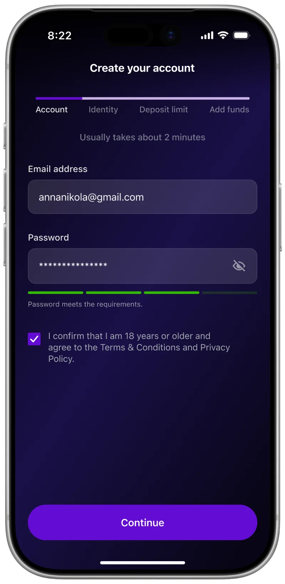
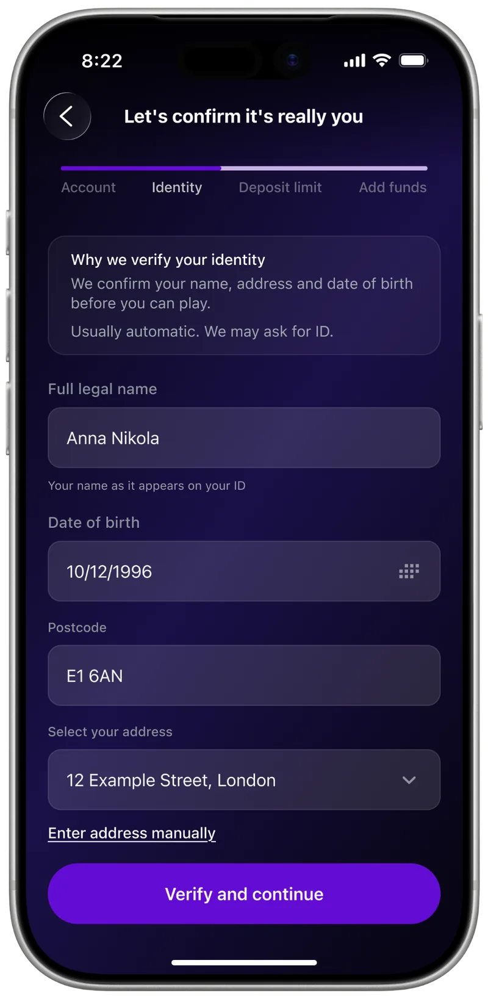
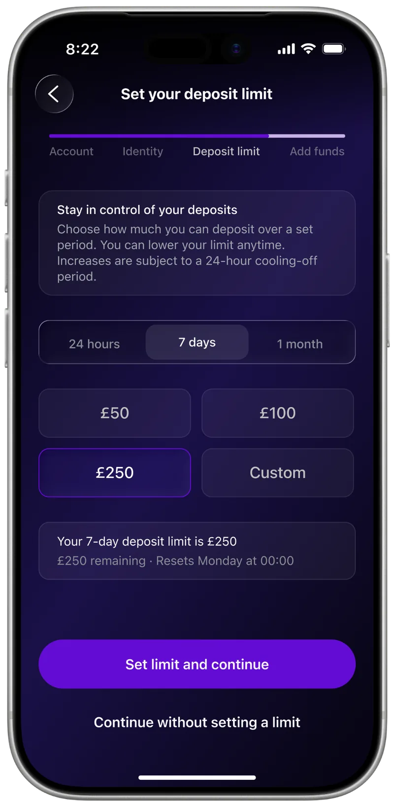
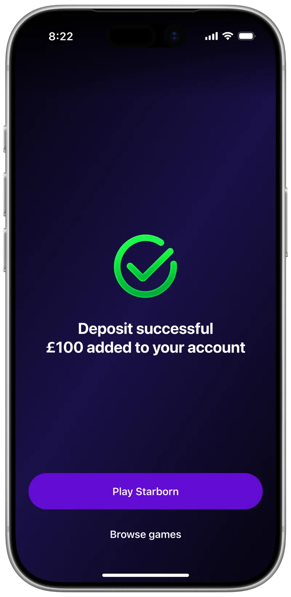
Key decision · Keep the chosen game in the journey
The flow starts because the player tries to launch Starborn. Instead of dropping that context, I carried the selected game through onboarding so the setup still felt connected to the original goal.
The interface tells the player that Starborn is saved, then brings them straight back to it once setup is complete.
Leaving and coming back
I didn’t assume onboarding would happen in one sitting. If the player leaves, Home shows where they are and what to do next instead of sending them back to the beginning.
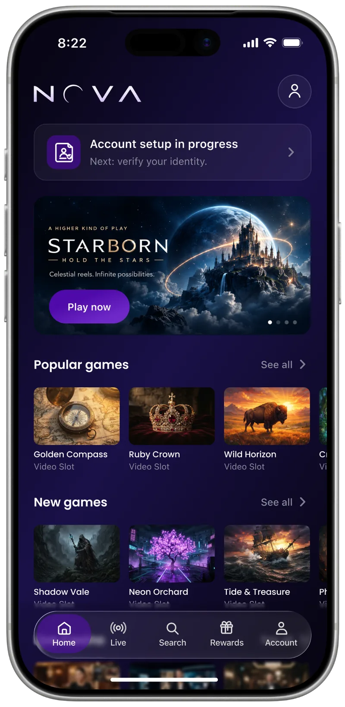
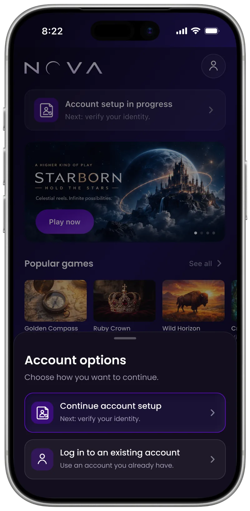
When verification doesn’t go smoothly
Identity checks don’t always resolve in one step. I designed separate paths for an automatic match failure, document upload, rejected photos, manual review and a true hard stop. Each state answers the same three questions: what happened, do I need to do anything, and what happens next?
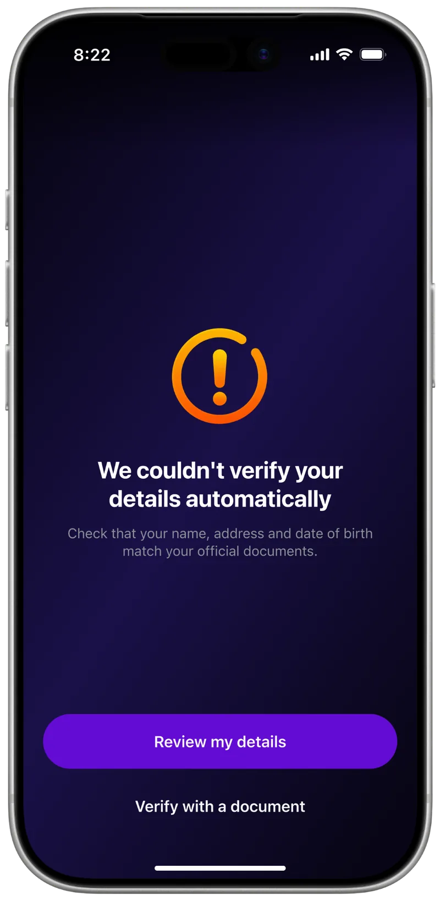
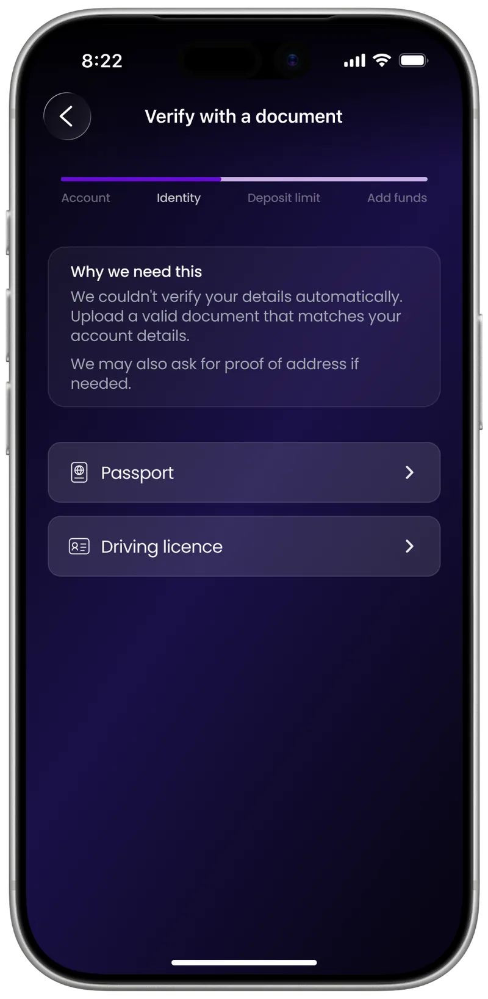
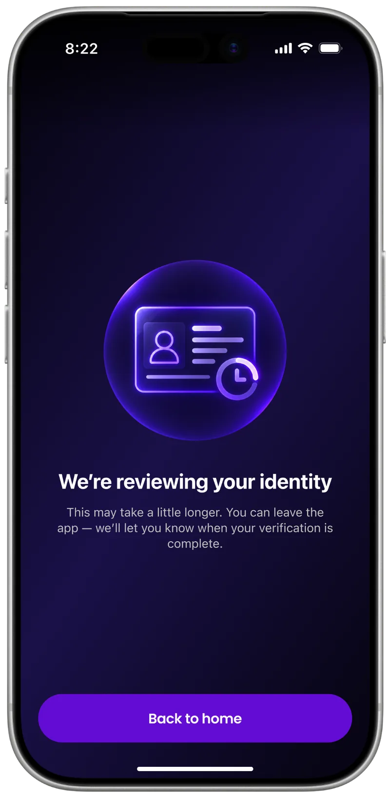
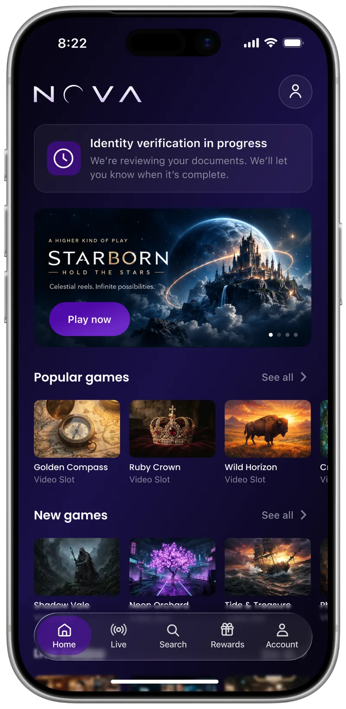
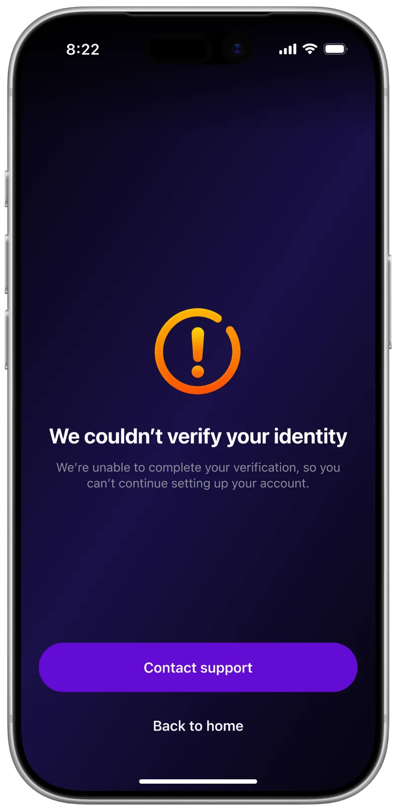
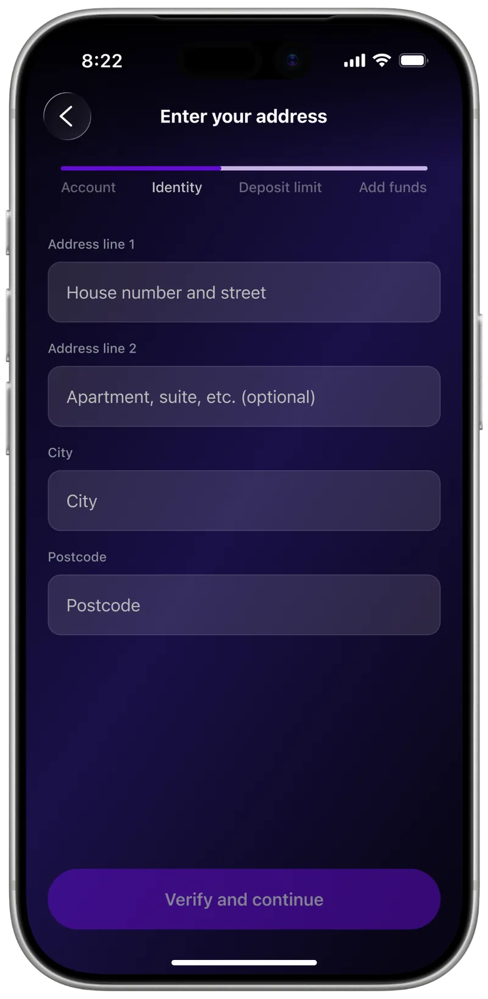
Recovering from form errors
Not every form error needs the same response. If the email already belongs to an account, the user gets a direct way to log in. If the data is simply invalid, the primary action stays unavailable until the issue is fixed.
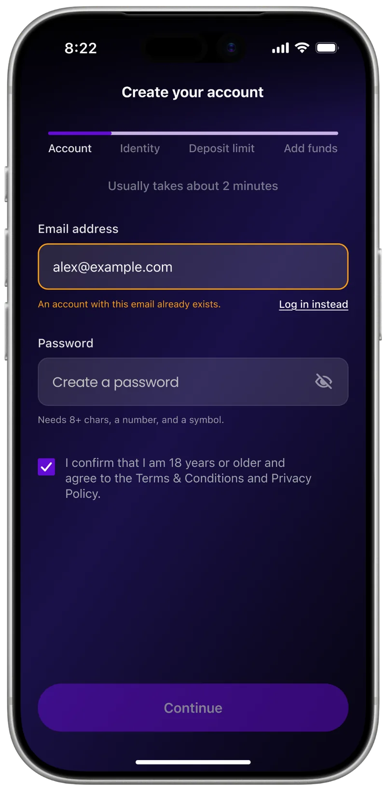
Funding without pressure
Adding money is a separate decision, not something the player has to do just to finish account setup. They can postpone it, and payment or limit errors are explained next to the choice that caused the problem.
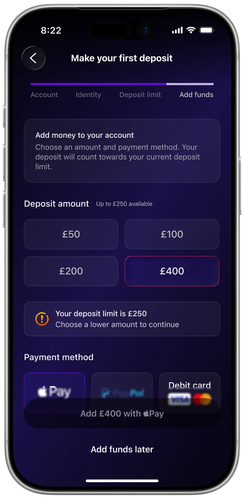
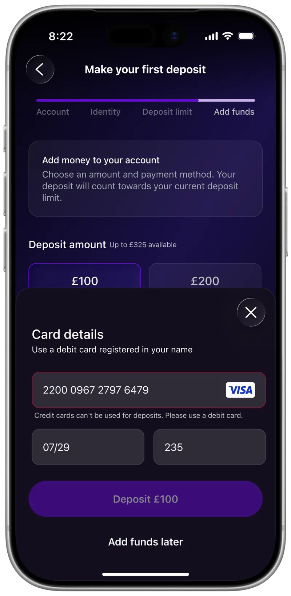
Result
Instead of a stack of separate screens, one connected activation journey, handed off to development:
- A core path of 6 steps: chosen game → account → identity check → deposit limit → deposit → play.
- 11 edge cases, each with its own way out: 6 during identity checks (automatic check failed, document check, poor photo, long manual review, hard stop with a route to support, manual address entry), 2 in forms (email already registered, invalid data), 2 at payment (limit, credit card restriction), plus returning to an interrupted session without losing progress.
- The player’s goal is never lost: the chosen game stays with them throughout, and after the deposit they land straight in it.
What I learned
The biggest lesson was that onboarding is only as good as its recovery paths. Once I designed for interruptions, failed checks and waiting states, the happy path changed too: progress had to persist, statuses had to be clearer, and the chosen game had to stay present from start to finish.